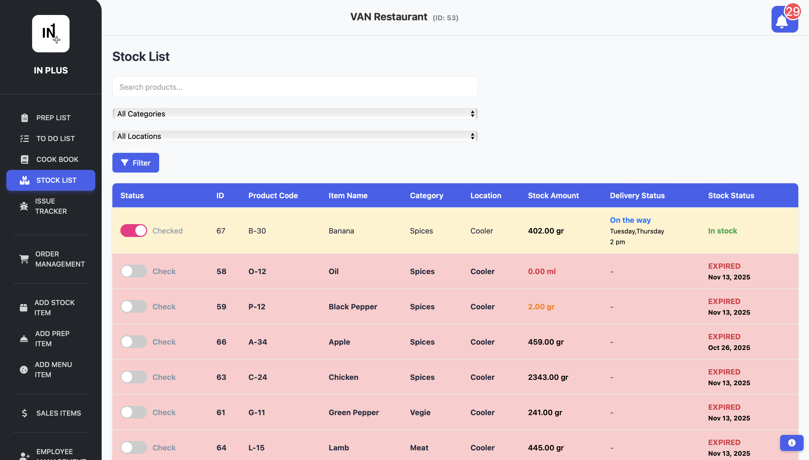
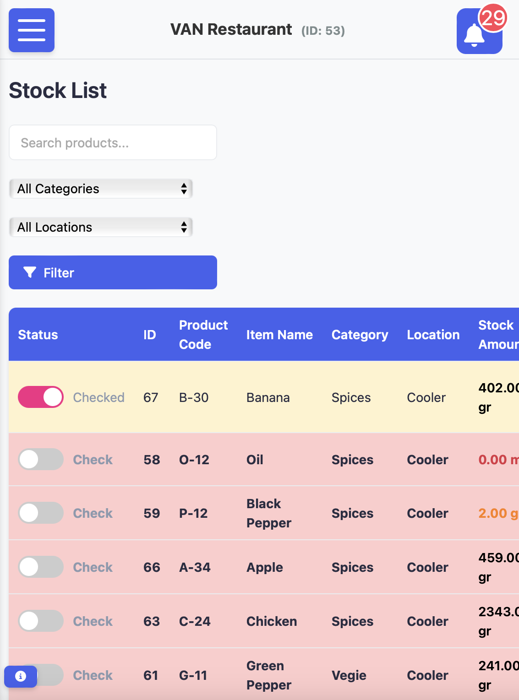
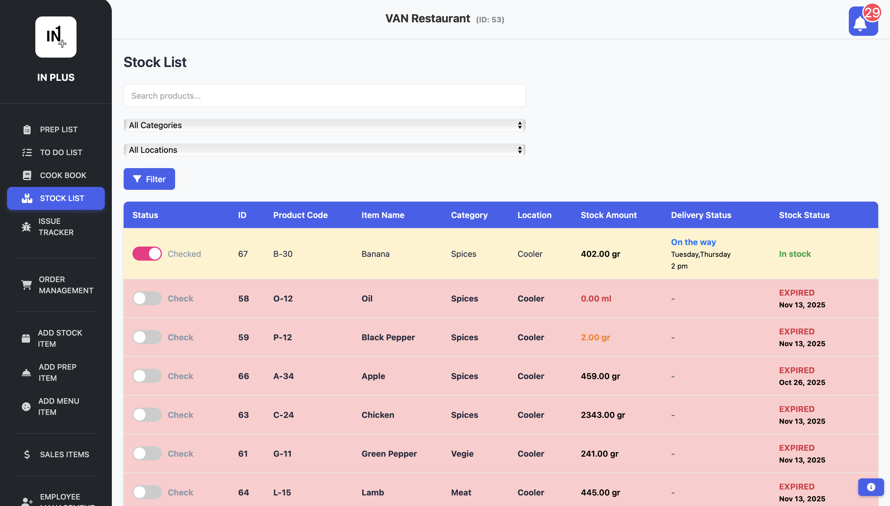
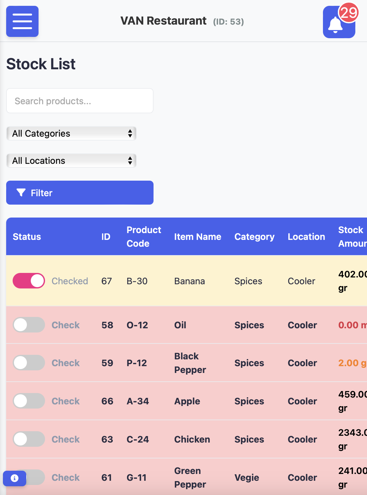
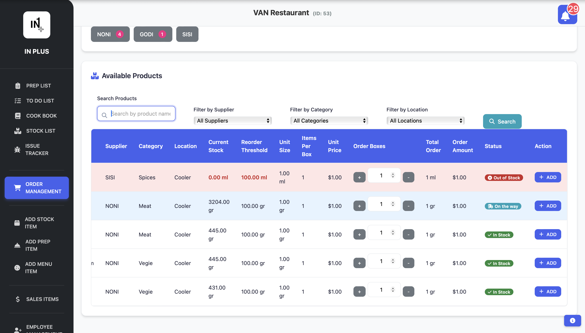
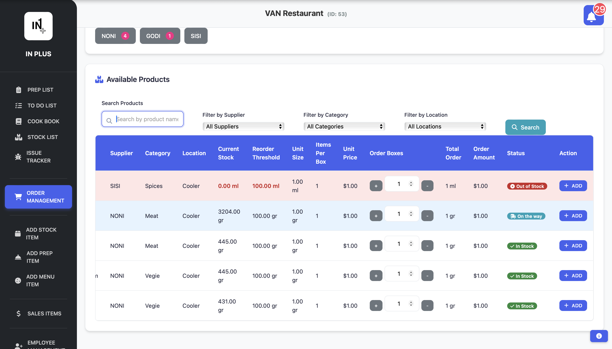

IN PLUS ONE - Advanced Inventory System
The Challenge
Key Pain Points & Solutions
Design Process
Information Architecture
Structured the platform around core modules: Dashboard, Inventory Management, Recipe & Costing, Multi-Platform Integration, and Analytics. Created user flows for each primary task.

Information architecture diagrams showing module relationships and user flows
Wireframing & Prototyping
Developed low-fidelity wireframes to establish layout and user flow. Progressed to high-fidelity prototypes with interactive elements for usability testing and stakeholder feedback.


"The wireframing phase helped us identify critical usability issues early, saving development time and ensuring a smoother user experience."
Visual Design & Testing
Implemented a clean, professional design system with dark theme for prolonged use. Conducted multiple rounds of user testing to refine interactions and improve usability.

 



 

Final design mockups showing dashboard interface, mobile app, and key features
Key Features
Results & Impact
User Feedback
"IN+ transformed how we manage inventory. The AI insights helped us reduce waste by 60% in the first month alone. The multi-platform integration saved us hours of manual work."
Visual Design
Lessons Learned
Next Project
Ready to see more of my work? Check out my next case study.
Portfolio View All Projects